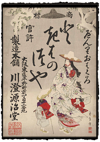
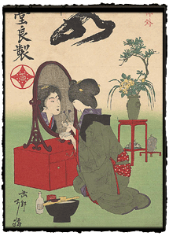

|
Drug Advertisements
Page 2 of 2
Many of the later advertisements are for products suitable for women: iron pills, "monthly cleansing" pills, and various cosmetic products, including tooth-blackening powder. The latter was a traditional treatment to enhance appearance, developed before modern dentistry assured that most people retained their teeth to adulthood; tooth-blackening, or ohaguro, was still in use even during the Meiji period by some married women, and by geisha. An early twentieth-century print from the collection advertises the "easy to use tooth-blackening oxide Tokiwa tsuyu." The product name Tokiwa tsuyu, roughly translating to "everlasting luster," also contains a reference to one of the foremost women of Japanese legend, Tokiwa Gozen. Gozen is best known today as the mother of famed warrior Minamoto no Yoshitsune (1159-89). According to the Tales of the Heike, an account of the momentous clash between the Minamoto and Taira military clans, following the death of clan leader Yoshitomo, his mistress Gozen was forced to flee through the snow with her three children. The advertisement makes use of this imagery, by representing Gozen in elegant court-style robes, walking through the snow with a baby to her breast and two other children beside her. The ad suggests that by using this product a woman could not only produce a lustrous smile, but also possess the beauty and virtue of Gozen herself. An ad for the base liquid used in tooth blackening shows a woman examining her teeth in an oval mirror, cup in one hand and tooth-blackening brush in the other, with a bottle with the liquid on the floor nearby. A glimpse of the red under-robe at her collar, sleeves, and below her knee signals to viewers that she is one of the elite geisha, not an ordinary housewife. A series of advertisements by Eitaku (1843-1890) reflect the new, modernized image of Japan emerging by the late 1880s, in which advertising was an increasingly prominent feature of daily life. The prints promote a set of three drugs from Rakuzendo, treating low energy, heartburn, and constipation, yet their illustrations contain no hint of these conditions, nor are the medicines or their effects personified.
|
|||